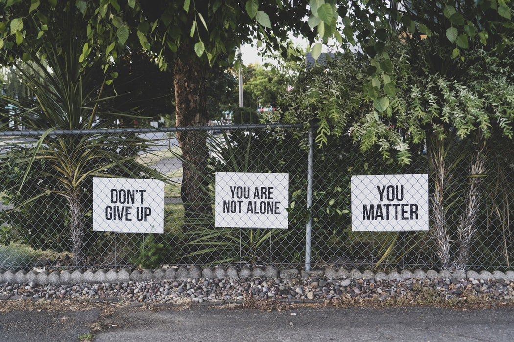

Understanding Mental Illness
- Can be occasional or chronic (lasting a long time).
- Can affect one’s ability to function properly in everyday life.
- Affects mood, thinking, actions and behavior.
- Are very common, many individuals will have a mental illness at one point in life.
- Usually caused by multiple linked causes, not one event.
Biological Causes of Mental Illness
- Family History
- Chemical Imbalances in the body
- Traumatic Brain Injury
- Use of Drugs or Alcohol
- Having a serious medical condition
Social Causes Of Mental Illness
- Life experiences (stress, childhood trauma, abuse)
- Feeling lonely or isolated in society
- Lacking a strong support system
How to assist those with mental illnesses
- Show support.
- Do not discourage their problems.
- React calmly, make them feel like they are being understood.
- Encourage them to avoid drugs or alcohol.
- Learn about their triggers and stressors to help avoid them.
- Have patience, recovery takes time.
